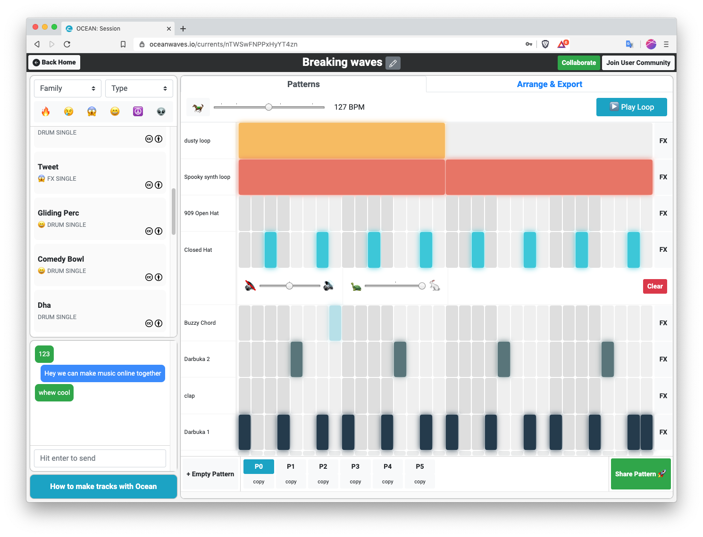

During my post-graduate year at Goldsmiths I researched how people remotely collaborate on creative projects online. I explored how different roles naturally emerge when working remotely together & the technical and UX approaches to successfully design systems which fun, engasging web based collaboration. Ocean is the result of multiple iterations over a number of years after my initial research.
The aim of Ocean is to build an accessible simple way to make music and break down the barriers associated with electronic music production. I am the sole developer & work in collaboration with two friends who work in music community & UX design.
The three core design principles for Ocean are: Fun, Fast, Simple. The use of playful visual language, and as little written text as possible allows Ocean to be used by as many people as possible.
Users can explore the curated sound library, made up of Creative Commons sounds and drag and drop them into their project. After building some beat patterns, they can then arrange patterns into a longer track and post to their profile to share with friends.
During the 2020 lockdown, Ocean has attracted a global user base, from Wuhan to Damascus. During a time where friends and normal life feel very distant, seeing other people expressing themselves & being 'along together' using a tool i've created has been incredibly rewarding.
I'd love to talk more one to one about how Ocean was built, where its heading and the state of audio on the web!
Email me on robin(at)futurerob.in
Ocean Beta - 400+ votes on ProductHunt
Explorations in Web Audio - An e-talk I gave for
Music Hackspace London
Make
music together in your browser - The Sampler